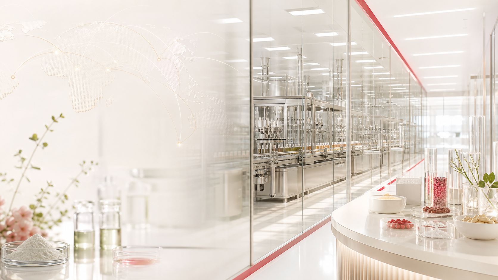

Vision
Beyond Functional Healthcare Solutions
機能性素材を供給するだけでなく、日本市場でヘルスケア事業が成り立つように、エビデンス・製造・流通までを一体で設計します。
VISION & MISSION
BIOLAB Japanが日本市場で何を目指して事業を行うのか、その答えです。
Vision
機能性素材を供給するだけでなく、日本市場でヘルスケア事業が成り立つように、エビデンス・製造・流通までを一体で設計します。
Our Mission
日本の機能性ヘルスケア産業をリードする企業へ飛躍することが、BIOLAB Japanの目標です。
商品開発の成功を支える素材と根拠情報に集中します。
Functional Probiotics
Functional Nature’s food ingredients

ODM / OEM
OUR BUSINESS MAP
韓国が開発と製造を、日本が販売と流通を担い、BIOLAB Japanがその間をつないで一本の供給線にします。
B2BKOREA
“Together with the best manufacturers”
CommerceJAPAN
より確かな素材情報を、より広い市場展開へつなげることがBIOLAB Japanの価値です。
RESEARCH & DEVELOPMENT
韓国の素材開発、製造、ブランド管理を日本市場向けの事業設計につなげます。
LEARN MOREEVIDENCE ARCHITECTURE
ヒト臨床試験、SCI論文、特許、認証資料を素材別に整理し、B2B提案に活用します。
LEARN MOREGLOBAL BUSINESS BRIDGE
日本の販売会社、メーカー、卸、ブランド事業者へ展開できる供給線を構築します。
LEARN MOREBIOLAB Japanの事業展開、素材情報、提携相談に関する最新トピックです。
2026.06.08
BIOLAB Japanは、素材開発、製造、ブランド管理、日本側販売ネットワークを一体で設計する事業ブリッジとして機能します。
LEARN MORE2026.06.08
プロバイオティクスと自然由来機能性素材を、カテゴリー、摂取量、エビデンスタグ別に整理しました。
LEARN MORE2026.06.08
機能性素材の調達、日本B2B流通、iHEALブランド協業に関する相談をWebフォームから受け付けます。
LEARN MORECONTACT US
素材調達、ODM/OEM、日本B2B流通、ブランド協業についてはお問い合わせページからご相談ください。